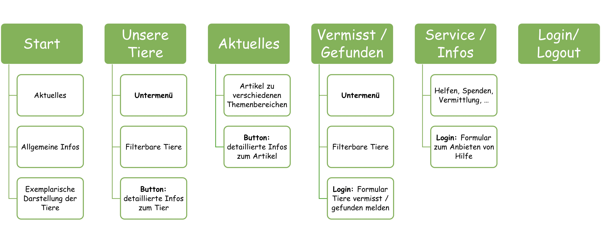
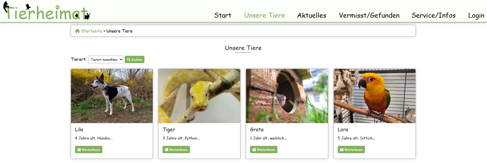

Beleg dynamische Webprogrammierung
Tierheimat
Fachbereich
Gebäudetechnik und Informatik
Angewandte Informatik
Projektmitglieder
Stephanie WachsJosephina Burger
Lucas-Manfred Herpe
Betreuer
Prof. Dr. Marcel SpehrBearbeitungszeitraum
21.10.2024 - 19.01.2025Inhaltsverzeichnis
- 1 Einleitung
- 1.1 Projektziel und Anfroderungen
- 1.2 Projektrückblick
- 1.3 Gepante Erweiterungen
- 2 Konzeption und Planung
- 2.1 Technologie- und Architekturwahl
- 2.2 Zeitplan und Meilensteine
- 2.3 Geplante Aufgabenteilung
- 3 Backend-Entwicklung
- 3.1 Datenbankentwurf
- 3.2 Datenbank-Setup und Anbindung
- 3.3 PHP-Skripte und Logik
- 4 Interaktive Features
- 4.1 Benutzerinteraktion
- 4.2 Dynamische Formulare und Eingabevalidierung
- 5 Tests und Optimierung
- 5.1 Frontend-Tests
- 5.2 Backend-Tests
- 6 Dokumentation
- 7 Fazit und Ausblick
- 7.1 Soll- / Ist-Vergleich
- 7.2 Lessons Learned
- 7.3 Ausblick
- 8 Anlagen
- 9 Quellen
1 Einleitung
Diese Seite dokumentiert den den zweiten Teil des Projektes
 .
.
Das Projekt ist in zwei Phasen gegliedert, die über zwei Semester laufen. Hier wird der zweite Teil ausführlich beschrieben, während eine detaillierte Dokumentation des ersten Teils hier verfügbar ist.
Diese Dokumentation ist in mehrere Abschnitte gegliedert, die einen umfassenden Überblick über alle Phasen und Aspekte des Projekts bieten. Sie beginnt mit einer Einleitung, in der das Projektziel und die Anforderungen beschrieben werden. Zudem enthält dieser Abschnitt einen Rückblick auf den bisherigen Projektverlauf sowie eine Übersicht über die geplanten Erweiterungen.
Im Anschluss folgt der Bereich Konzeption und Planung, der die Auswahl der Technologien und Architektur beleuchtet, den Zeitplan mit wichtigen Meilensteinen darstellt und die Ressourcenplanung sowie die Aufgabenverteilung im Team beschreibt.
Daraufhin widmet sich die Dokumentation der Backend-Entwicklung, einschließlich des Datenbankentwurfs und -setups sowie der PHP-basierten Skript-Logik, die die Kernfunktionalität der Webseite unterstützt.
Der Abschnitt Interaktive Features geht auf die Umsetzung der Benutzerinteraktionen ein, wie etwa dynamische Formulare und Eingabevalidierungen, um eine benutzerfreundliche Oberfläche zu gewährleisten.
Im Kapitel zu Tests und Optimierung werden die durchgeführten Frontend- und Backend-Tests beschrieben, die zur Sicherstellung der Funktionalität und Stabilität dienen.
Ein abschließender Abschnitt Fazit und Ausblick bietet einen Vergleich zwischen dem Ist- und Soll-Zustand, eine Reflexion der gewonnenen Erkenntnisse (Lessons Learned) und einen Ausblick auf mögliche Weiterentwicklungen. Ergänzend werden in den Anlagen und im Quellenverzeichnis unterstützende Materialien und die genutzten Quellen bereitgestellt.
Der folgende Abschnitt beginnt mit einer Erläuterung des Projektziels und der Anforderungen. Anschließend wird ein kurzer Rückblick auf die im ersten Teil umgesetzten Frontend-Entwicklungen gegeben, gefolgt von einer Übersicht der geplanten Erweiterungen.
Zur besseren Lesbarkeit wird in dieser Dokumentation auf geschlechtsneutrale Sprachformen verzichtet; alle Personenbezeichnungen gelten für alle Geschlechter gleichermaßen.
1.1 Projektziel und Anforderung
Während unserer Projektrecherche erkannten wir schnell, dass viele Tierheime in der digitalen Welt hinter ihren Möglichkeiten zurückbleiben. Veraltete Webseiten beeinträchtigen oft die Nutzererfahrung erheblich, was das Auffinden von Informationen und die Kontaktaufnahme erschwert. Aus dieser Beobachtung entstand die Idee für unser Projekt: die Entwicklung einer modernen, benutzerfreundlichen Webseite für Tierheime, die durch eine klare Struktur, hilfreiche Funktionen und ein ansprechendes Design überzeugt. Dynamische und interaktive Elemente sollen dabei den Nutzern eine möglichst intuitive und angenehme Bedienung ermöglichen.
Das Hauptziel der Webseite ist es, die Vermittlung von Tieren zu unterstützen, indem sie strukturierte und umfassende Informationen wie Fotos, detaillierte Beschreibungen und Kontaktdaten bereitstellt. Darüber hinaus soll die Webseite die Sichtbarkeit des Tierheims in der Öffentlichkeit erhöhen und interne Abläufe durch digitale Prozesse effizienter gestalten. So werden Funktionen wie Formulare für Hilfsangebote und für das Melden vermisster oder gefundener Tiere integriert, um die Interaktion der Nutzer mit dem Tierheim zu fördern und das Gemeinschaftsengagement zu stärken. Informationsseiten und regelmäßige Ankündigungen sollen Besucher über aktuelle Geschehnisse und Aktionen stets auf dem Laufenden halten.
Um diese Ziele zu erreichen, wurde das Projekt in zwei Phasen gegliedert, die sich jeweils über ein Semester erstrecken: Der erste Teil konzentrierte sich auf die Entwicklung eines benutzerfreundlichen und übersichtlichen Designs sowie die Bereitstellung grundlegender Funktionen mithilfe von HTML und CSS, um eine solide Basis zu schaffen. Der zweite Teil widmet sich nun der Entwicklung eines strukturierten Backends und der Integration dynamischer Elemente und interaktiver Features, die das Nutzererlebnis weiter verbessern und der Webseite zusätzliche Funktionalität verleihen.
Dieser Teil des Projekt startete am 21.10.2024 und soll bis zum 19.01.2025 abgeschlossen sein. Mit der Fertigstellung wird eine nutzerfreundliche, voll funktionsfähige Webseite bereitgestellt, die die grundlegenden Anforderungen von Tierheimen und ihrer Webseitenbesucher erfüllt.
1.2 Projektrückblick
Der erste Teil des Projekts befasste sich mit dem Entwurf der Webseite mithilfe von HTML und CSS. Im Folgenden sind Links hinterlegt, die auf die detaillierte Dokumentation der Zwischenschritte des ersten Projektteils verweisen und diese nachvollziehbar beschreiben.
Zu Beginn des ersten Projektteils wurde eine Ist-Analyse durchgeführt, bei der bestehende Tierheim-Webseiten untersucht und positive sowie negative Aspekte identifiziert wurden. Die Erkenntnisse daraus dienten als Orientierung für das eigene Projekt: Positive Eigenschaften, wie die klare Darstellung vermisster und gefundener Tiere auf der Webseite des Tierheims Jena, sollten übernommen werden, während negative Merkmale, wie das unstimmige Farbschema der Webseite des Tierheims Erfurt, bewusst vermieden wurden.
Anschließend wurde die Zielgruppe der Webseite genauer definiert, um die Gestaltung und Funktionalität gezielt auf die Bedürfnisse der Nutzer abzustimmen.
Aus dieser Zielgruppenanalyse wurden Struktur und Funktionen der „Tierheimat“-Webseite abgeleitet. Zu den wichtigen Funktionen zählten interaktive Formulare, die das Melden vermisster und gefundener Tiere sowie das Anbieten von Unterstützung erleichtern.

Daraufhin wurde das Logo der „Tierheimat“ entworfen und ein einheitliches Design für die Benutzeroberfläche der Webseite entwickelt. Die grüne Farbgestaltung und die gewählte Schriftart tragen zur Identität der „Tierheimat“ bei und spiegeln die Werte dieser wider.

Auf Basis der entworfenen Designs wurden die Seiten schließlich in HTML und CSS umgesetzt. Dazu gehörte auch die Entwicklung eines responsive Designs, um eine optimale Darstellung auf verschiedenen Geräten sicherzustellen. Das Teilprojekt wurde abgeschlossen durch Nutzertests und die Einholung externen Feedbacks zur Webseite sowie eine Reflexion der Lessons Learned.
Die gesamte Projektarbeit wurde parallel in der Projektdokumentation festgehalten. Mit der finalen, strukturierten und nutzerfreundlichen Webseite, die ein ansprechendes und responsive Design sowie nützliche Funktionen bietet, wurde das Ziel des ersten Projektteils erfolgreich erreicht. Diese Webseite bildet nun die Grundlage für die geplanten Erweiterungen im zweiten Teil des Projekts.
1.3 Geplante Erweiterungen
Im zweiten Teil des Projekts liegt der Schwerpunkt auf der Entwicklung des Backends sowie der Integration interaktiver Funktionen, um die Webseite benutzerfreundlicher und funktionaler zu gestalten.
Zunächst ist eine strukturierte Anbindung der Webseite an eine Datenbank vorgesehen. Diese ermöglicht eine effiziente Datenverwaltung, reduziert redundanten Code und bildet die Grundlage für verschiedene Formular- und Filterfunktionen. Dazu wird ein Entity-Relationship-Modell entworfen, das die spezifischen Anforderungen der Webseite abbildet – beispielsweise eine „Tiere“-Tabelle, die zwischen zur Adoption freigegebenen, vermissten und gefundenen Tieren unterscheidet. Aus diesem Modell werden mithilfe von SQL die entsprechenden Tabellen in MariaDB erstellt. Anschließend erfolgt die Einrichtung einer Datenbankverbindung über ein PHP-Skript, um den sicheren Austausch von Daten zwischen der Webseite und der Datenbank zu gewährleisten.
Anschließend sollen für die weitere Backend-Entwicklung die CRUD-Funktionen (Create, Read, Update, Delete) in PHP implementiert werden. Diese Funktionen ermöglichen es, neue Datensätze hinzuzufügen, bestehende Daten zu lesen, zu aktualisieren oder zu löschen. So wird es beispielsweise möglich sein, neue Tiere in die Datenbank aufzunehmen, deren Informationen zu bearbeiten oder sie aus dem System zu entfernen. Die CRUD-Funktionen finden unter anderem in der Verarbeitung der Formulardaten Anwendung. Hierfür sind separate PHP-Dateien vorgesehen, die zudem Sicherheitsmaßnahmen, wie etwa gegen SQL-Injection, beinhalten. Nutzern, die vermisste oder gefundene Tiere melden, wird außerdem die Möglichkeit geboten, ihre Einträge zu bearbeiten oder zu löschen. Dies gewährleistet eine stets aktuelle Tierdatenbank und eine effiziente Datenverwaltung. Abschließend soll die Backend-Logik umfassenden Tests unterzogen werden, um eine fehlerfreie Datenverarbeitung sicherzustellen.
Neben der Backend-Entwicklung ist auch die Einbindung interaktiver Elemente mithilfe von JavaScript geplant, um das Nutzererlebnis zu verbessern. Eine der vorgesehenen Funktionen ist ein Filter, mit dem Nutzer gezielt nach Tierarten oder Status (vermisst/gefunden) suchen können. Diese dynamische Filteroption erleichtert die Navigation und ermöglicht den Nutzern, die für sie relevanten Informationen schnell zu finden. Da die zu erwartende Datenmenge gering bleibt – weniger als 200 Einträge, bestehend aus zur Adoption freigegebenen oder vermissten und gefundenen Tieren – planen wir eine clientseitige Filterung direkt im Browser mithilfe von JavaScript. Auf diese Weise werden alle relevanten Daten bereits beim Laden der Seite vollständig in den Browser geladen und können dort ohne zusätzliche Serveranfragen gefiltert werden. Dies sorgt für eine schnelle, unmittelbare Reaktionszeit der Filterfunktion und verbessert das Nutzungserlebnis durch eine flüssige, verzögerungsfreie Interaktion. Darüber hinaus soll ein „Gefällt mir“-Button für die Tiere integriert werden, sodass Interessenten ihre Favoriten speichern und später leichter darauf zugreifen können.
Anmerkung: Je nachdem ob es über den Server laufen soll (in mehreren Browsern und Geräten über längere Zeit sichtbar) oder nicht (nur in dem Browser), wird auch die Verwendung des Backends notwendig. Hierbei sendet ein JavaScript-Event eine Anfrage an das Backend (z.B. per AJAX), um favorisierte Tiere in der Datenbank zu speichern. Wenn wir das so umsetzten müssen wir die Datenbank noch anpassen und noch eine Realtion Favorisiert erstellen die in n:m Beziehung zwischen Personen und Tieren steht. Eventuell so: Favoriten (FavoritenID, TierID, PersonID, Datum)
Zusätzlich ist die Integration weiterer dynamischer Inhalte geplant, die sich auf Nutzereingaben basierend anpassen. So sollen „Weiterlesen“-Buttons eine detailliertere Ansicht zu einem Tier oder Artikel bieten, während im Hilfsformular durch Klicken zusätzliche Termineingaben hinzugefügt werden können, ohne die Seite neu laden zu müssen. Auch die Funktion „weitere Tiere anzeigen“ soll es den Nutzern ermöglichen, zusätzliche Einträge anzuzeigen, ohne die gesamte Webseite zu aktualisieren. Darüber hinaus soll JavaScript genutzt werden, um Benutzereingaben bereits im Browser zu prüfen, bevor sie an den Server gesendet werden. Dies erlaubt die direkte Erkennung und Korrektur unvollständiger oder fehlerhafter Eingaben im Formular.
Diese geplanten Erweiterungen sollen die Webseite strukturiert und interaktiv ausbauen, um den Anforderungen einer modernen Tierheim-Plattform gerecht zu werden und den Nutzern eine angenehme und effiziente Bedienung zu bieten.
2 Konzeption und Planung
Dieses Kapitel bietet einen umfassenden Einblick in die Planung des Projekts. Zunächst wird die Auswahl der verwendeten Technologien sowie der zugrunde liegenden Architektur erläutert, die als Fundament für die Entwicklung dient. Anschließend folgt eine Übersicht über den Zeitplan und die festgelegten Meilensteine, die den Fortschritt des Projekts strukturieren. Abschließend wird die geplante Aufgabenteilung vorgestellt, welche einer effizienten Zusammenarbeit und der erfolgreichen Umsetzung der Projektziele dient.
2.1 Technologie- und Architekturwahl
Für die Entwicklung der Webseite wurde eine Kombination aus verschiedenen Technologien und Tools gewählt, um eine funktionale und benutzerfreundliche Plattform zu erstellen. Zu den eingesetzten Technologien zählen XAMPP, PHP, MariaDB, JavaScript und die integrierte Entwicklungsumgebung PHPStorm.
XAMPP dient als lokale Serverumgebung, die den Apache-Webserver, MariaDB als Datenbankmanagementsystem und die PHP-Programmiersprache integriert. Diese Kombination erleichtert die Verwaltung und Zusammenarbeit der benötigten Komponenten. XAMPP lässt sich schnell und unkompliziert installieren und konfigurieren, wodurch das Entwicklungsteam effizient am Projekt arbeiten kann. Der integrierte Apache-Webserver simuliert dabei die Funktionalität eines echten Servers auf dem lokalen Computer. So kann die Webseite lokal entwickelt und getestet werden, was schnelle Iterationen und Anpassungen während der Entwicklungsphase ermöglicht.
PHP wird als Programmiersprache für das Backend verwendet, da sie sich ideal für die Formularverarbeitung und Datenbankinteraktionen eignet. Durch PHP lassen sich Daten zuverlässig speichern, abrufen und verarbeiten – eine zentrale Voraussetzung für die Kernfunktionen der Webseite.
MariaDB wird als relationales Datenbankmanagementsystem eingesetzt, um alle relevanten Daten, wie Nutzer- und Tierdaten, strukturiert zu speichern. MariaDB bietet dabei hohe Leistungsfähigkeit und Zuverlässigkeit, was für die konsistente Datenverwaltung der Anwendung entscheidend ist.
JavaScript wird für die Gestaltung der interaktiven Benutzeroberfläche genutzt. Durch JavaScript können dynamische Inhalte umgesetzt werden, die auf Nutzereingaben reagieren. Funktionen wie Filteroptionen, „Weiterlesen“-Buttons und asynchrone Datenanfragen tragen wesentlich zu einem reibungslosen und intuitiven Nutzererlebnis bei.
Für die Programmierung und Verwaltung des Codes wurde die Entwicklungsumgebung PHPStorm gewählt. Mit Funktionen wie integrierter Syntaxprüfung und Debugging-Tools unterstützt PHPStorm eine effiziente und strukturierte Umsetzung der Webseite. Diese Tools erleichtern das schnelle Erkennen und Beheben von Fehlern und sorgen für eine optimierte, fehlerfreie Entwicklung.
Die Architektur der Anwendung basiert auf dem klassischen Client-Server-Modell. In diesem Modell sendet der Client (Webbrowser) Anfragen an den Server (XAMPP mit PHP und MariaDB) und empfängt die entsprechenden Antworten. Die klare Trennung von Frontend und Backend sorgt für eine übersichtliche Struktur des Codes und vereinfacht die Wartung und Erweiterung der Anwendung.
Zusammenfassend ermöglicht die gewählte Kombination von Technologien und die Architekturwahl eine moderne, interaktive und benutzerfreundliche Webseite, die den Anforderungen der Nutzer entspricht und eine effiziente Entwicklungsumgebung für das Team schafft.
2.2 Zeitplan und Meilensteine
In der nachfolgenden Tabelle ist ein grober Zeitplan für den zweiten Teil des Projektes hinterlegt. Die detaillierte Zeitplanung ist in Anlage 2 zu finden.
| Projektbereich | geplante Zeit |
|---|---|
| Backend-Entwicklung | h |
| Implementierung interaktive Features | h |
| Dokumentation | h |
| Gesamt | h |
Der Zeitplan für das Projekt ist in die Bereiche der Backend-Entwicklung, der Implementierung interaktive Features und der Ausarbeitung der Dokumentation unterteilt. .
Die Backend-Entwicklung beginnt mit dem Kick-Off am 21.10.2024 und soll bis ... fertig gestellt werden.
Die Backend-Entwicklung wird durch abschließende Nutzertests beendet.
Durch wöchentliche Konsultationen werden die Fortschritte der jeweiligen Bearbeiter präsentiert, reflektiert und analysiert.
Die Dokumentation läuft dabei parallel zum Projekt ab. Eine abschließende Präsentation rundet das ganze Projekt ab.
Wichtige Meilensteine sind unter anderem ... und der Abschluss des Nutzertests.
2.3 Geplante Aufgabenteilung
Die Aufgabenaufteilungen sind nach gemeinschaftlicher, interner Abstimmung getroffen wurden.
Text
Eine detaillierte Darstellung der tatsächlichen Aufgabenteilung, bei der Implementierung der Webseite und der Dokumentation, lässt sich auch unter dem Punkt ... finden.
Regelmäßige Team-Meetings und Status-Updates stellen sicher, dass alle Teammitglieder stets auf dem neuesten Stand sind und effizient zusammenarbeiten.
Webgestütze Tools wie "Jira Software" und "Whatsapp" tragen dazu bei, eine klare Übersicht und eine direkte Kommunikation zu gewährleisten. Nachfolgend ein Ausschnitt unserer Aufgaben in Jira (Stand: Beginn der Entwicklung):
Die genaue Aufgabenteilung lässt sich der folgenden Tabelle Entnehmen. Unten in der Tabelle sind die Aufgaben verzeichnet, die alle mitglieder vorgenommen haben.
| Lucas-Manfred Herpe | Stephanie Wachs | Josephina Burger |
|---|---|---|
| SQL-Befehle zur Erstellung der Tabellen | ||
| Entwurf des E-R-Modells Korrekturlesen der Dokumentation |
||
3 Backend-Entwicklung
In diesem Abschnitt wird die Implementierung des Backends umfassend erläutert. Zunächst wird der Entwurf der Datenbank und die dabei aufgetretenen Herausforderungen beschrieben. Anschließend folgt eine Erläuterung des grundlegenden Datenbank-Setups und der Anbindung an die Webseite, die eine reibungslose Speicherung und den schnellen Abruf wichtiger Daten ermöglicht. Abschließend wird auf die PHP-Skripte und die Logik eingegangen, die zur Steuerung der zentralen Funktionen der Webseite notwendig sind.
3.1 Datenbankentwurf
Zu Beginn des Datenbankentwurfs hat sich jedes Teammitglied Gedanken darüber gemacht, welche Daten für die Webseite erforderlich sind, um die verschiedenen Funktionen optimal zu unterstützen. Auf dieser Grundlage wurden erste Entwürfe in Form von Entity-Relationship-Modellen oder Tabellen erstellt, die die benötigten Entitäten und deren Beziehungen zueinander skizzierten.
Im nächsten Schritt wurden diese individuellen Entwürfe im Team zusammengetragen und besprochen, um eine ganzheitliche Sicht auf die Anforderungen zu erhalten. Gemeinsam wurde daraus ein umfassendes ER-Modell entwickelt, das die Kernfunktionen der Webseite, wie beispielsweise die Verwaltung von Tierinformationen, Nutzerprofilen und interaktiven Formularen, wie die Formulare zum Melden vermisster oder gefundener Tiere oder das Formular zum Anbieten von Hilfe, unterstützt.
Eine zentrale Herausforderung im Entwurfsprozess bestand darin, Redundanzen zu vermeiden und gleichzeitig alle Anforderungen bestmöglich zu erfüllen. Besonders bei der Tabelle „Helfen“ standen wir vor einer Abwägung: Es war unklar, ob separate Tabellen für „Wochentage“ und „Datum“ erforderlich wären, um zwischen regelmäßigem und einmaligem Hilfsangebot zu unterscheiden. Der Wochentag im Hilfsformular steht für ein wiederkehrendes Angebot (z. B. „jeden Montag“), während das Datum ein einmaliges Angebot darstellt.
Nach reiflicher Überlegung entschieden wir uns, beide Angaben in einer einzigen Tabelle abzubilden, sodass jeder Wochentag oder jedes Datum ein eigenständiges Tupel darstellt. Die Herausforderung in der Umsetzung besteht nun darin sicherzustellen, dass entweder ein Datum oder ein Wochentag im Tupel angegeben ist, jedoch niemals beides.
Das finale ER-Modell dient als Grundlage für die Implementierung der Datenbank und bildet alle notwendigen Datenbeziehungen ab, sodass eine konsistente und effiziente Datenstruktur für die Webseite gewährleistet ist.
Im darauffolgenden Schritt erstellte Manfred dann die SQL Befehle, zur Erstellung der einzelnen Tabellen.
Die folgenden Abbildungen zeigen die Zwischenentwürfe, den finalen Entwurf und die SQL-Befehle.
4 Interaktive Features
5 Tests und Optimierungen
6 Dokumentation
Die Dokumentation des Projekts "Tierheimat" ist ein wesentlicher Bestandteil unserer Arbeit, der die gesamte Entwicklung und Umsetzung des zweiten Teils des Projekts transparent und nachvollziehbar macht.
Eine sorgfältig erstellte Dokumentation stellt sicher, dass alle Phasen des Projekts, von der Planung bis zur Implementierung, detailliert festgehalten werden und als wertvolle Ressource für zukünftige Referenzen dient.
Ein wichtiger Aspekt der Nachvollziehbarkeit stellen auch die Anlagen und Quellen dar. Aus diesen Abschnitten können alle wichtigen erhobenen Daten klar und nachvollziehbar betrachtet werden.
6 Fazit
6.1 Soll- / Ist-Vergleich
Im Rahmen des Projekts wurde ein Soll- / Ist-Vergleich durchgeführt, um die geplanten und tatsächlich aufgewendeten Stunden in den verschiedenen Projektphasen zu analysieren. Die Ergebnisse sind in der folgenden Tabelle dargestellt:
| Projektphase | Soll | Ist |
|---|---|---|
| Planungs- und Entwurfsphase | h | h |
| Implementierungsphase | h | h |
| Dokumentationsphase | h | h |
| Gesamt | h | h |
Insgesamt wurden für das Projekt ... Stunden aufgewendet, während ursprünglich ... Stunden geplant waren.
6.2 Lessons Learned
-
Bedeutung einer klaren Projektplanung:
Wir haben gelernt, dass eine sorgfältige und detaillierte Planung der Schlüssel zum Erfolg eines Projektes ist.
Die Erstellung eines klaren Projektplans, einschließlich Meilensteine und Zeitpläne, hat uns geholfen den Überblick zu behalten und sicherzustellen, dass alle Teammitglieder auf dem gleichen Stand sind.
-
Kommunikation und Teamarbeit:
Effektive Kommunikation innerhalb des Teams war ein entscheidender Faktor für den Projekterfolg.
Regelmäßige Meetings, offene Diskussionen und das Teilen von Feedback haben dazu beigetragen, Missverständnisse zu vermeiden und die Zusammenarbeit zu stärken.
Die Bedeutung der Teamarbeit und die Fähigkeit, effektiv zusammenzuarbeiten, können nicht genug betont werden.
-
Flexibilität und Anpassungsfähigkeit:
Während des Projektes sind wir auf unvorhergesehene Herausforderungen gestoßen, die Flexibilität und Anpassungsfähigkeit erforderten.
Die Bereitschaft, Pläne anzupassen und Lösungen für unerwartete Probleme zu finden, war entscheidend für das Vorankommen des Projekts.
-
Technische Herausforderungen meistern:
Die Implementierung verschiedener Technologien und Tools hat uns gelehrt, wie wichtig es ist, kontinuierlich zu lernen und sich weiterzuentwickeln.
Wir haben neue Techniken und Best Practices kennengelernt, die unsere technischen Fähigkeiten verbessert haben.
-
Organisation:
Insgesamt war das Projekt "Tierheimat" eine wertvolle Lernerfahrung, die uns geholfen hat, unsere Fähigkeiten und unser Wissen zu erweitern.
6.3 Ausblick
Das Projekt "Tierheimat" hat eine solide Grundlage für die Zukunft geschaffen und bietet zahlreiche Möglichkeiten zur Weiterentwicklung. Während die aktuelle Website den Bedürfnissen der Nutzer und des Tierheims gerecht wird, gibt es immer Raum für Verbesserungen und Erweiterungen.
Text
Anlagenverzeichnis
Anlage 1: Detaillierte Zeitplanung
| Planungs- und Entwurfsphase | h | |
| Ideenfindung | h | |
| Benutzeroberfläche entwerfen und abstimmen | h | |
| Recherche (Bildersuche, ...) | h | |
| Implementierungsphase | h | |
| Umsetzung des Mockups, auch im Responsive Design | h | |
| Umsetzung der Formulare (required, ...) | h | |
| Testen aller Eingaben und Ansichten | h | |
| Dokumentationsphase | h | |
| Erstellen der Projektdokumentation | h | |
| Prüfung der Projektdokumentation durch die anderen Projektmitglieder | h | |
| Gesamt | h | |
Quellen
- Quelle: Deckblatt
- Quelle: 1 Einleitung
- Quelle: 2 Konzeption und Planung
- Quelle: 3 Backend-Entwicklung
- Quelle: 4. Interaktive Features
- Quelle: 5 Tests und Optimierung
- Quelle: 6 Dokumentation
- Quelle: Fazit und Ausblick
- Quelle: Anlagen
- Bildquellen komplette Website
Im Quellverzeichnis können alle verwendeten Pfade der erhobenen Daten nach Über- und Unterpunkten sortiert nachvollzogen werden.
Bilder welche nicht im Quellverzeichnis aufgelistet sind stammen aus privaten Quellen und werden nicht näher benannt.
Quelle: 1. Einleitung
Logo Tierheimat:
Erstellt durch Stephanie Wachs
Tierschutz Foto (Abbildung 1):
https://www.bing.com/images/search?view=detailV2&ccid=ZPXi5DE9&id=ECCFF162B8DE1569D7E4534875D37EEFAC526A42&thid=OIP.ZPXi5DE9NMIBSTh26ixcTgHaCX&mediaurl=https%3a%2f%2fwww.zooplus.co.uk%2fbilder%2f1%2f2017_01_CharitySupport_1000x320_DE_1.jpg&cdnurl=https%3a%2f%2fth.bing.com%2fth%2fid%2fR.64f5e2e4313d34c201493876ea2c5c4e%3frik%3dQmpSrO9%252b03VIUw%26pid%3dImgRaw%26r%3d0&exph=320&expw=1000&q=tierschutz&simid=608028981758609405&FORM=IRPRST&ck=3F72AE4447F2CCAD2C1123D0B146826D&selectedIndex=27&itb=0&ajaxhist=0&ajaxserp=0![https://www.bing.com/images/search?view=detailV2&ccid=ZPXi5DE9&id=ECCFF162B8DE1569D7E4534875D37EEFAC526A42&thid=OIP.ZPXi5DE9NMIBSTh26ixcTgHaCX&mediaurl=https%3a%2f%2fwww.zooplus.co.uk%2fbilder%2f1%2f2017_01_CharitySupport_1000x320_DE_1.jpg&cdnurl=https%3a%2f%2fth.bing.com%2fth%2fid%2fR.64f5e2e4313d34c201493876ea2c5c4e%3frik%3dQmpSrO9%252b03VIUw%26pid%3dImgRaw%26r%3d0&exph=320&expw=1000&q=tierschutz&simid=608028981758609405&FORM=IRPRST&ck=3F72AE4447F2CCAD2C1123D0B146826D&selectedIndex=27&itb=0&ajaxhist=0&ajaxserp=0](https://www.bing.com/images/search?view=detailV2&ccid=ZPXi5DE9&id=ECCFF162B8DE1569D7E4534875D37EEFAC526A42&thid=OIP.ZPXi5DE9NMIBSTh26ixcTgHaCX&mediaurl=https%3a%2f%2fwww.zooplus.co.uk%2fbilder%2f1%2f2017_01_CharitySupport_1000x320_DE_1.jpg&cdnurl=https%3a%2f%2fth.bing.com%2fth%2fid%2fR.64f5e2e4313d34c201493876ea2c5c4e%3frik%3dQmpSrO9%252b03VIUw%26pid%3dImgRaw%26r%3d0&exph=320&expw=1000&q=tierschutz&simid=608028981758609405&FORM=IRPRST&ck=3F72AE4447F2CCAD2C1123D0B146826D&selectedIndex=27&itb=0&ajaxhist=0&ajaxserp=0){kind=link}
Quelle: 2 Konzeption und Planung
Jira Übersicht (Abbildung 13):
https://tierheimat.atlassian.net/jira/software/projects/SCRUM/boards/1Quelle: 7 Fazit und Ausblick
Tabelle tatsächlicher Zeitaufwand (Tabelle 2):
Erstellt durch Stephanie Wachs
Quelle: 8. Anlagen
Anlage 2: Detaillierte Zeitplanung (Tabelle 3):
Erstellt durch Stephanie Wachs
Bildquellen komplette Website
Bildquellen Startseite:
Deine-Tierwelt [online] URL: https://www.deine-tierwelt.de/magazin/wp-content/uploads/sites/7/2018/10/Hund-und-Katze-schlafen.jpg [Stand 30.06.2024]
{kind=link}
Flickr.com [online] URL: https://www.flickr.com/photos/68555868@N04/16403083195/in/pool-terrarium/ [Stand 30.06.2024]
Bildquellen: Unsere Tiere
Tierheim-Leipzig [online] URL: https://www.tierheim-leipzig.de/Project/cashew/ [Stand 29.05.2024]
Tierheim-Leipzig [online] URL: https://www.tierheim-leipzig.de/wp-content/uploads/2024/04/20240320_155557.jpg [Stand 29.05.2024]
{kind=link}
Tierheim-Leipzig [online] URL: https://www.tierheim-leipzig.de/wp-content/uploads/2024/04/20240320_155545.jpg [Stand 29.05.2024]
{kind=link}
Tierheim-Leipzig [online] URL: https://www.tierheim-leipzig.de/wp-content/uploads/2023/02/IMG_20230213_151007.jpg [Stand 29.05.2024]
{kind=link}
Tierheim-Leipzig [online] URL: https://www.tierheim-leipzig.de/wp-content/uploads/2023/02/IMG_20230213_150829.jpg [Stand 29.05.2024]
{kind=link}
Tierheim-Leipzig [online] URL: https://www.tierheim-leipzig.de/wp-content/uploads/2024/05/20240519_115028.jpg [Stand 29.05.2024]
{kind=link}
Tierheim-Leipzig [online] URL: https://www.tierheim-leipzig.de/wp-content/uploads/2024/05/IMG-20240519-WA0014.jpg [Stand 29.05.2024]
{kind=link}
Tierheim-Leipzig [online] URL: https://www.tierheim-leipzig.de/wp-content/uploads/2023/03/20230318_113947.jpg [Stand 29.05.2024]
{kind=link}
Tierheim-Leipzig [online] URL: https://www.tierheim-leipzig.de/wp-content/uploads/2023/03/20230314_162813.jpg [Stand 29.05.2024]
{kind=link}
Tierheim-Leipzig [online] URL: https://www.tierheim-leipzig.de/wp-content/uploads/2023/07/FFBD96E4-F74E-47CC-8FB5-D801AE1E5CA1.jpeg [Stand 29.05.2024]
{kind=link}
Tierheim-Leipzig [online] URL: https://www.tierheim-leipzig.de/wp-content/uploads/2023/07/19C315C2-71AA-4DEB-801B-825C693DCC82.jpeg [Stand 29.05.2024]
{kind=link}
Tierheim-Leipzig [online] URL: https://www.tierheim-leipzig.de/wp-content/uploads/2024/04/IMG-20240422-WA0007.jpg [Stand 29.05.2024]
{kind=link}
Tierheim-Leipzig [online] URL: https://www.tierheim-leipzig.de/wp-content/uploads/2024/04/IMG-20240422-WA0021.jpg [Stand 29.05.2024]
{kind=link}
Tierheim-Leipzig [online] URL: https://www.tierheim-leipzig.de/wp-content/uploads/2022/01/Pino.jpg [Stand 29.05.2024]
{kind=link}
Tierheim-Leipzig [online] URL: https://www.tierheim-leipzig.de/wp-content/uploads/2021/10/20220115_132018.jpg [Stand 29.05.2024]
{kind=link}
Tierheim-Leipzig [online] URL: https://www.tierheim-leipzig.de/wp-content/uploads/2019/06/20230527_162006.jpg [Stand 29.05.2024]
{kind=link}
Tierheim-Leipzig [online] URL: https://www.tierheim-leipzig.de/wp-content/uploads/2019/06/20230527_162232.jpg [Stand 29.05.2024]
{kind=link}
Tierheim-Leipzig [online] URL: https://www.tierheim-leipzig.de/wp-content/uploads/2023/12/20240113_130739.jpg [Stand 29.05.2024]
{kind=link}
Tierheim-Leipzig [online] URL: https://www.tierheim-leipzig.de/wp-content/uploads/2023/12/20231216_131633.jpg [Stand 29.05.2024]
{kind=link}
Tierheim-Leipzig [online] URL: https://www.tierheim-leipzig.de/wp-content/uploads/2024/04/20240414_143241.jpg [Stand 29.05.2024]
{kind=link}
Tierheim-Leipzig [online] URL: https://www.tierheim-leipzig.de/wp-content/uploads/2024/04/20240414_143304.jpg [Stand 29.05.2024]
{kind=link}
Tierheim-Leipzig [online] URL: https://www.tierheim-leipzig.de/wp-content/uploads/2022/11/DSC_4334-2.jpg [Stand 05.07.2024]
{kind=link}
Tierheim-Leipzig [online] URL: https://www.tierheim-leipzig.de/wp-content/uploads/2022/11/DSC_4342.jpg [Stand 05.07.2024]
{kind=link}
Bildquellen: Vermisst / Gefunden
Tierheim-Leipzig [online] URL: https://www.tierheim-leipzig.de/Project/carlo-moechte-nicht-ins-tierheim/ [Stand 29.05.2024]
Tierheim-Leipzig [online] URL: https://www.tierheim-leipzig.de/Project/cello/ [Stand 29.05.2024]
Tierheim-Leipzig [online] URL: https://www.tierheim-leipzig.de/Project/gnocchi/ [Stand 29.05.2024]
Tierheim-Leipzig [online] URL: https://www.tierheim-leipzig.de/Project/privatvermittlung-floyd/ [Stand 29.05.2024]
Tierheim-Leipzig [online] URL: https://www.tierheim-leipzig.de/Project/stitch/ [Stand 29.05.2024]
Tierheim-Leipzig [online] URL: https://www.tierheim-leipzig.de/wp-content/uploads/2023/05/20230525_160027.jpg [Stand 29.05.2024]
{kind=link}
Tierheim-Leipzig [online] URL: https://www.tierheim-leipzig.de/wp-content/uploads/2023/01/IMG_20230119_145515_edit_465193045793598.jpg [Stand 29.05.2024]
{kind=link}
Tierheim-Leipzig [online] URL: https://www.tierheim-leipzig.de/wp-content/uploads/2022/04/IMG-20220403-WA0001.jpg [Stand 29.05.2024]
{kind=link}
Tierheim-Leipzig [online] URL: https://www.tierheim-leipzig.de/wp-content/uploads/2024/05/20240525_120351.jpg [Stand 29.05.2024]
{kind=link}
Tierheim-Leipzig [online] URL: https://www.tierheim-leipzig.de/wp-content/uploads/2023/10/C440C255-1ED9-41FD-9919-DEBFC091A9E8.jpeg [Stand 29.05.2024]
{kind=link}
Unsplash [online] URL: https://images.unsplash.com/photo-1652631822225-0b9e423cd3c8?w=900&auto=format&fit=crop&q=60&ixlib=rb-4.0.3&ixid=M3wxMjA3fDB8MHxzZWFyY2h8Mjh8fHN0cmV1bmVuZGUlMjBrYXR6ZXxlbnwwfHwwfHx8MA%3D%3D [Stand 30.06.2024]
Bildquellen: Service / Infos
Tierbedarf-Disount [online] URL: https://www.tierbedarf-discount.ch/media/image/ee/32/0f/katze-spielt-katze-beschaftigen-intro.jpg [Stand 30.06.2024]
{kind=link}
Unsplash [online] URL: https://images.unsplash.com/photo-1513360371669-4adf3dd7dff8?w=900&auto=format&fit=crop&q=60&ixlib=rb-4.0.3&ixid=M3wxMjA3fDB8MHxzZWFyY2h8Mjh8fHBlcnNvbiUyMGhvbGRpbmclMjBhJTIwY2F0fGVufDB8fDB8fHww [Stand 30.06.2024]
Unsplash [online] URL: https://images.unsplash.com/photo-1706920147354-77d76004177f?q=80&w=1770&auto=format&fit=crop&ixlib=rb-4.0.3&ixid=M3wxMjA3fDB8MHxwaG90by1wYWdlfHx8fGVufDB8fHx8fA%3D%3D [Stand 30.06.2024]
Unsplash [online] URL: https://unsplash.com/de/fotos/flachfokusfotografie-eines-weissen-shih-tzu-welpen-der-auf-dem-gras-lauft-qO-PIF84Vxg [Stand 30.06.2024]
Unsplash [online] URL: https://images.unsplash.com/photo-1570745526295-8223b49b3c53?w=900&auto=format&fit=crop&q=60&ixlib=rb-4.0.3&ixid=M3wxMjA3fDB8MHxzZWFyY2h8MjE1fHx0cmF1cmlnZXIlMjBodW5kfGVufDB8fDB8fHww [Stand 30.06.2024]
Zurich-Versicherung [online] URL: https://www.zurich.de/-/media/project/zwp/germany/br/images/product/op-versicherung-fuer-katzen_1200x630_2021_07.jpg?rev=331bf83073e14538b45159cf39b53789 [Stand 05.07.2024]
{kind=link}